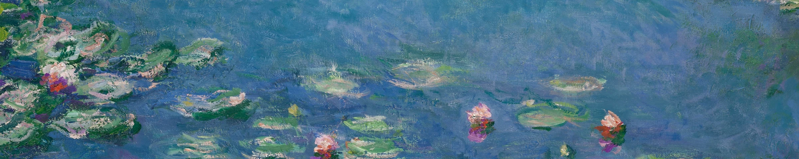
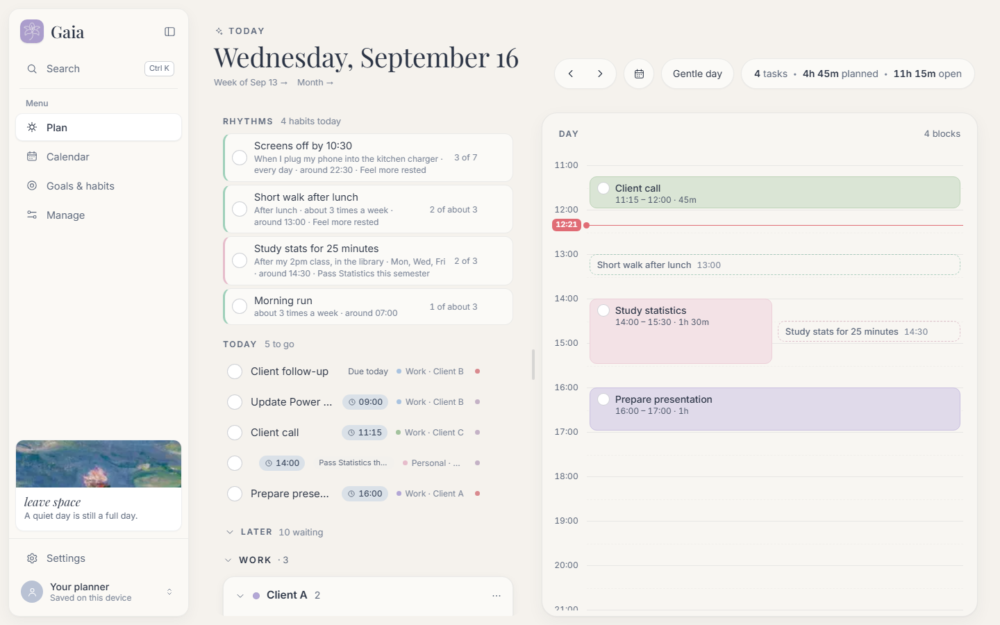
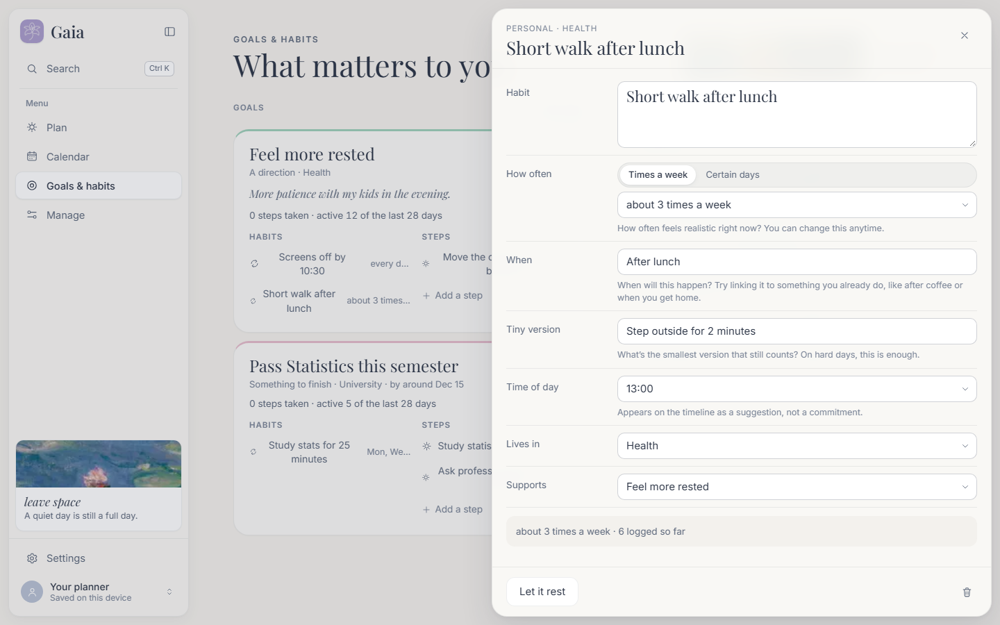
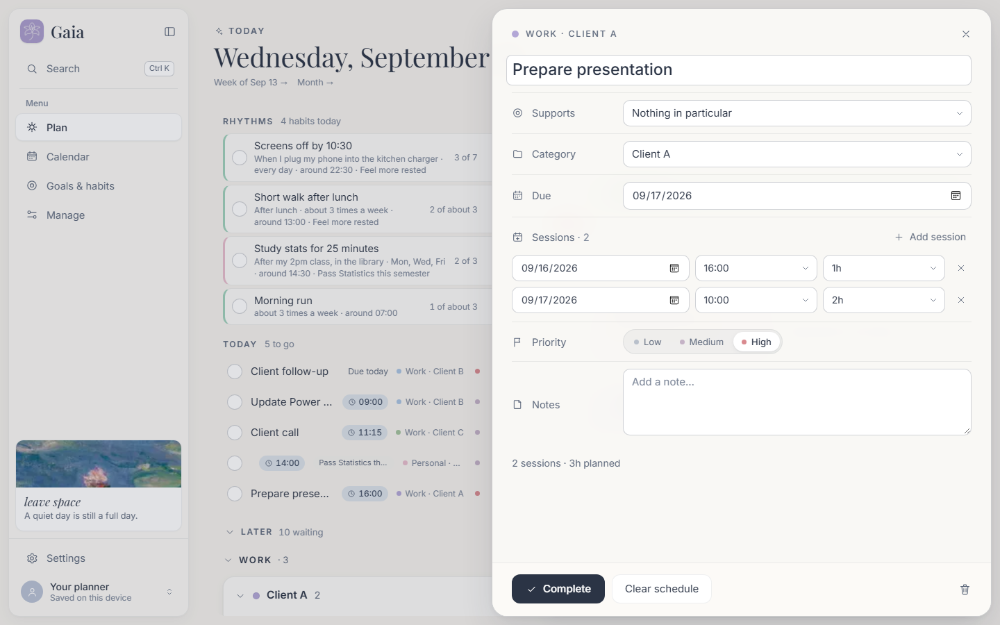
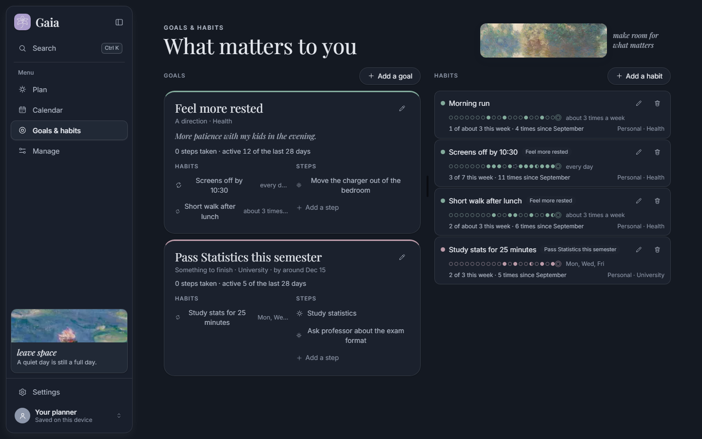

Gaia
A kind way to organise yourself. Tasks, time-blocking, goals and habits, built to support you instead of keeping score.

Organising yourself shouldn’t hurt
Most planners are built like scoreboards. Gaia is an attempt to turn toxic productivity into something softer.
Red numbers for what you didn’t do. Streaks that break. Lists that grow every time you look at them. A lot of productivity tools measure you, and on a hard week they tell you that you failed.
Gaia is meant to feel different. It helps you choose a day instead of survive one. It remembers what you did and never counts what you didn’t. Rest counts as part of the plan, and letting something go is allowed.
Tending a garden, not clearing an inbox.
That is why it is named after Gaia, the Greek goddess of the Earth, and why it is painted in the colours of Monet’s gardens.
made with care
What’s inside
Six places, one calm rhythm. Choose a tab to look around.




Rhythms, not streaks
A habit in Gaia is something you’d like to come back to, not a chain you have to protect. There are three things you can log, and nothing that means “missed”.
Done
You did the thing. Lovely.
Tiny
You did the smallest version, like stepping outside for two minutes. It counts.
Rest
You chose to rest. That is a decision, not a failure.
Blank
Nothing logged, and nothing stored either. Gaia has no value for “missed”.
Four paintings, four moods
Every colour in Gaia comes from a Monet painting. Choose one to repaint this page, the same way it repaints the app.
Open Gaia
The easy way
Double-click Gaia on your desktop, or Start Gaia.bat in the project folder. The first time, it installs what it needs. Then it starts the app and opens it in your browser. Keep the small terminal window open while you use Gaia, and close it to stop.
From a terminal
npm install
npm run devThen open http://localhost:5173. Requires Node.js 18 or newer.
Your data stays with you
There is no account, and nothing is uploaded. Your planner lives in this browser’s localStorage (key gaia:v1). Clearing your browser data erases it. In Settings ▸ Your data you can export everything as JSON, restore the sample data, or delete it all (you can undo that once).
Keeping Gaia kind in code
The gentleness isn’t only in the look. It is written into the data model and the wording rules.
How things relate
Group → Category → Task where it belongs
↑
Goal → Habits + Tasks what it’s forA goal is never a folder. Tasks and habits belong to a category, and they can also point at one goal. Most never will, and that’s fine.
Words Gaia never uses
The shared wording lives in src/lib/copy.ts. Check-ins only ever store something positive or neutral. If you add a feature, please keep it that way.
Conventions
- Colour only comes from tokens. No component names a colour. Regenerate
tokens.csswithnode scripts/gen-tokens.mjs. - Editors are side sheets in the URL (
?task=,?goal=,?habit=), so Back closes them. - No form submits. Every control writes as it changes.
- Undo snapshots the whole state before a destructive action, via
notify(message, previous). - Old saves still load.
migrateStatefills in anything new, and existing data always wins.
Commands
| Command | What it does |
|---|---|
npm run dev | Dev server on port 5173 |
npm test | Unit tests |
npm run build | Type-check and build into dist/ |
npm run art | Regenerate Monet crops and icons |
node scripts/gen-tokens.mjs | Regenerate tokens.css |
How the code is laid out
src/
types.ts Group, Category, Task, Goal, Habit, CheckIn, Reflection
store/ reducer, selectors, persist (localStorage + migrateState), GaiaProvider
lib/ pure helpers: dates, time, layout, rhythm, copy, sensitive
components/ ui kit, tasks, habits, plan sections, timeline, sheets, layout
pages/ Plan (TodayPage), Calendar, Goals, Settings, Support, Manage/*
styles/ tokens.css (all colour) and global.css
monet/ original paintings (never bundled; npm run art crops them)Gaia is a planning tool, not a health service. If things feel heavy, the Support page in the app lists crisis and mental-health resources in Colombia (Línea 106, 123, 192 option 4) and internationally (findahelpline.com).